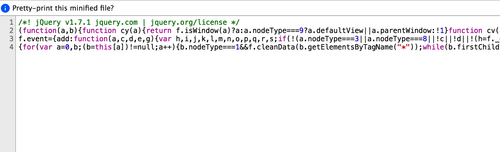
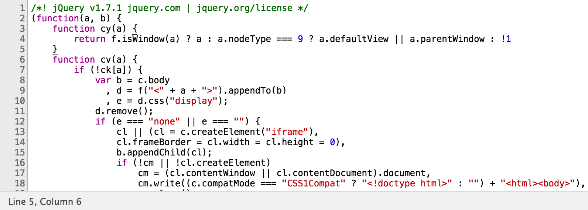
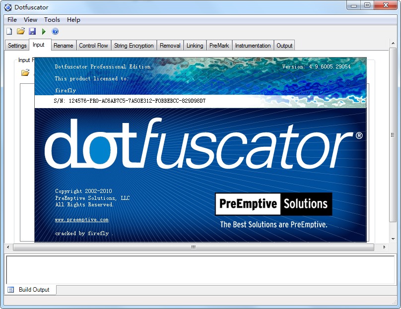
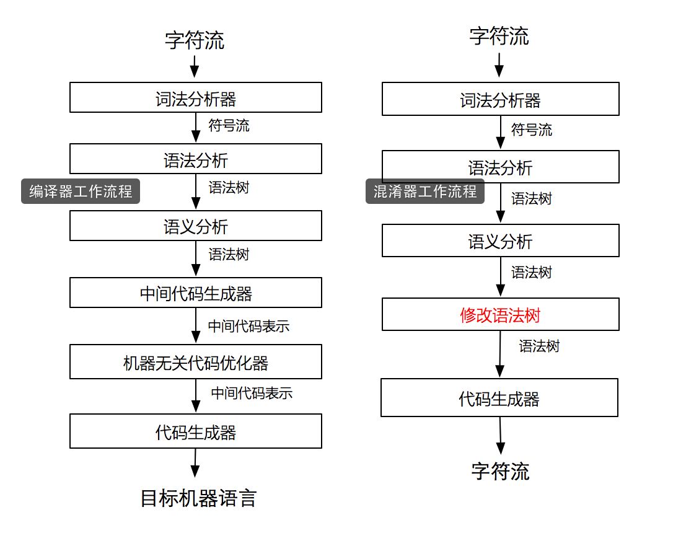
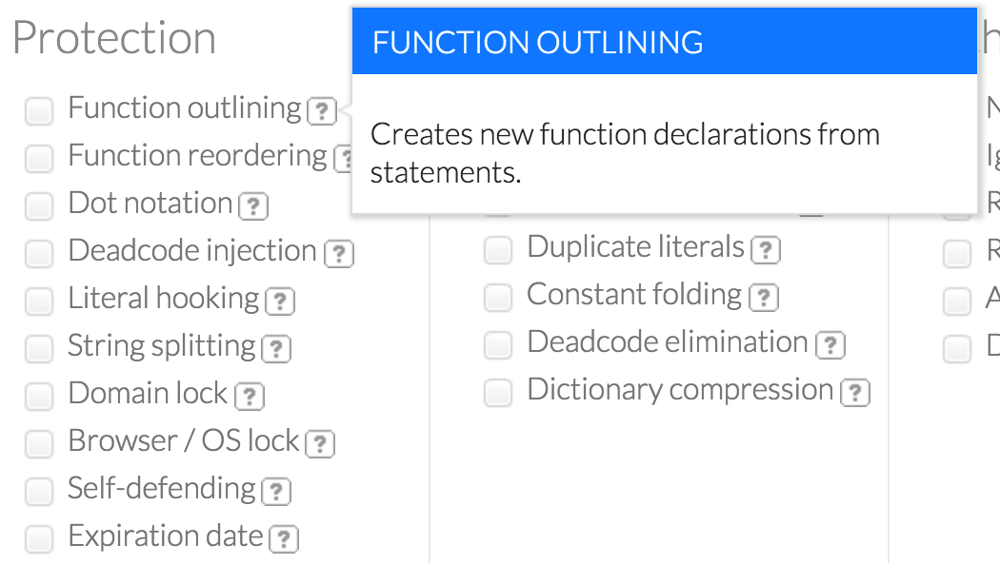
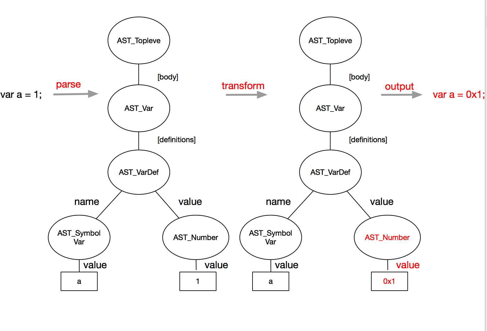
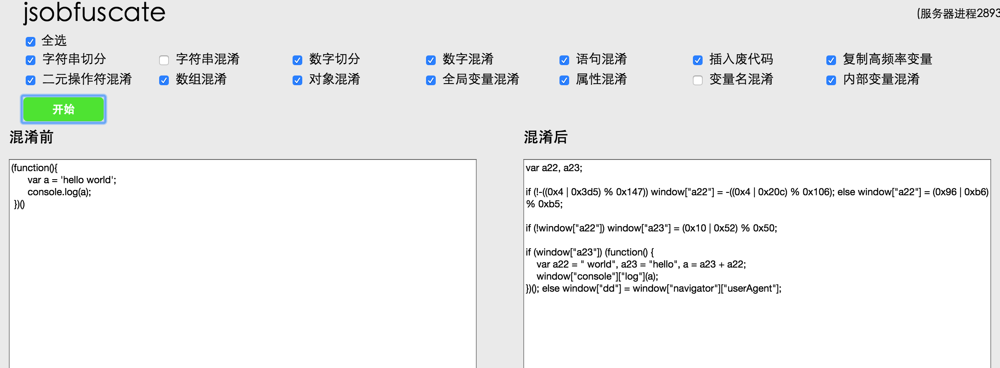

<!doctype html>


  


<html class="theme-next pisces use-motion">
<head>
  <meta charset="UTF-8"/>
<meta http-equiv="X-UA-Compatible" content="IE=edge,chrome=1" />
<meta name="viewport" content="width=device-width, initial-scale=1, maximum-scale=1"/>


<meta http-equiv="Cache-Control" content="no-transform" />
<meta http-equiv="Cache-Control" content="no-siteapp" />


  
  
  <link href="/vendors/fancybox/source/jquery.fancybox.css?v=2.1.5" rel="stylesheet" type="text/css" />


  
  
  
  

  
    
    
  

  

  

  

  

  
    
    
    <link href="//fonts.googleapis.com/css?family=Lato:300,300italic,400,400italic,700,700italic&subset=latin,latin-ext" rel="stylesheet" type="text/css">
  


<link href="/vendors/font-awesome/css/font-awesome.min.css?v=4.4.0" rel="stylesheet" type="text/css" />

<link href="/css/main.css?v=5.0.1" rel="stylesheet" type="text/css" />


  <meta name="keywords" content="安全,热门," />


  <link rel="shortcut icon" type="image/x-icon" href="/favicon.ico?v=5.0.1" />


<meta name="description" content="0x00 前言在信息安全领域，可信系统（Trusted system）是一个让人心动的目标，它指的是一个通过实施特定的安全策略而达到一定可信程度的系统。
在计算机中，可信平台模块（Trusted Platform Module，TPM）已经投入使用，它符合可信赖计算组织（Trusted Computing Group，TCG）制定的TPM规范，是为了实现可信系统目标的而打造的一款安全芯片。作为可信">
<meta property="og:type" content="article">
<meta property="og:title" content="可信前端之路-代码保护">
<meta property="og:url" content="http://liyangready.github.io/2016/06/14/可信前端之路-代码保护/index.html">
<meta property="og:site_name" content="leon的后花园">
<meta property="og:description" content="0x00 前言在信息安全领域，可信系统（Trusted system）是一个让人心动的目标，它指的是一个通过实施特定的安全策略而达到一定可信程度的系统。
在计算机中，可信平台模块（Trusted Platform Module，TPM）已经投入使用，它符合可信赖计算组织（Trusted Computing Group，TCG）制定的TPM规范，是为了实现可信系统目标的而打造的一款安全芯片。作为可信">
<meta property="og:image" content="http://liyangready.github.io/./1.png">
<meta property="og:image" content="http://liyangready.github.io/./2.png">
<meta property="og:image" content="http://liyangready.github.io/./3.png">
<meta property="og:image" content="http://liyangready.github.io/./4.png">
<meta property="og:image" content="http://liyangready.github.io/./5.png">
<meta property="og:image" content="http://liyangready.github.io/./6.png">
<meta property="og:image" content="http://liyangready.github.io/./7.png">
<meta property="og:image" content="http://liyangready.github.io/./8.png">
<meta property="og:updated_time" content="2016-07-23T09:11:07.000Z">
<meta name="twitter:card" content="summary">
<meta name="twitter:title" content="可信前端之路-代码保护">
<meta name="twitter:description" content="0x00 前言在信息安全领域，可信系统（Trusted system）是一个让人心动的目标，它指的是一个通过实施特定的安全策略而达到一定可信程度的系统。
在计算机中，可信平台模块（Trusted Platform Module，TPM）已经投入使用，它符合可信赖计算组织（Trusted Computing Group，TCG）制定的TPM规范，是为了实现可信系统目标的而打造的一款安全芯片。作为可信">


<script type="text/javascript" id="hexo.configuration">
  var NexT = window.NexT || {};
  var CONFIG = {
    scheme: 'Pisces',
    sidebar: {"position":"left","display":"post"},
    fancybox: true,
    motion: true,
    duoshuo: {
      userId: 0,
      author: '博主'
    }
  };
</script>


  <link rel="canonical" href="http://liyangready.github.io/2016/06/14/可信前端之路-代码保护/"/>

  <title> 可信前端之路-代码保护 | leon的后花园 </title>
</head>

<body itemscope itemtype="http://schema.org/WebPage" lang="zh-Hans">

  


  <script type="text/javascript">
    var _hmt = _hmt || [];
    (function() {
      var hm = document.createElement("script");
      hm.src = "//hm.baidu.com/hm.js?0d5df6881b58c01a0b0b284670745c3c";
      var s = document.getElementsByTagName("script")[0];
      s.parentNode.insertBefore(hm, s);
    })();
  </script>


  
  
    
  

  <div class="container one-collumn sidebar-position-left page-post-detail ">
    <div class="headband"></div>

    <header id="header" class="header" itemscope itemtype="http://schema.org/WPHeader">
      <div class="header-inner"><div class="site-meta ">
  

  <div class="custom-logo-site-title">
    <a href="/"  class="brand" rel="start">
      <span class="logo-line-before"><i></i></span>
      <span class="site-title">leon的后花园</span>
      <span class="logo-line-after"><i></i></span>
    </a>
  </div>
  <p class="site-subtitle"></p>
</div>

<div class="site-nav-toggle">
  <button>
    <span class="btn-bar"></span>
    <span class="btn-bar"></span>
    <span class="btn-bar"></span>
  </button>
</div>

<nav class="site-nav">
  

  
    <ul id="menu" class="menu">
      
        
        <li class="menu-item menu-item-home">
          <a href="/" rel="section">
            
              <i class="menu-item-icon fa fa-fw fa-home"></i> <br />
            
            首页
          </a>
        </li>
      
        
        <li class="menu-item menu-item-hot">
          <a href="/tags/热门/" rel="section">
            
              <i class="menu-item-icon fa fa-fw fa-thumbs-o-up"></i> <br />
            
            热门
          </a>
        </li>
      
        
        <li class="menu-item menu-item-front">
          <a href="/categories/前端/" rel="section">
            
              <i class="menu-item-icon fa fa-fw fa-html5"></i> <br />
            
            前端
          </a>
        </li>
      
        
        <li class="menu-item menu-item-secure">
          <a href="/categories/安全/" rel="section">
            
              <i class="menu-item-icon fa fa-fw fa-user-secret"></i> <br />
            
            安全
          </a>
        </li>
      
        
        <li class="menu-item menu-item-think">
          <a href="/categories/思考/" rel="section">
            
              <i class="menu-item-icon fa fa-fw fa-smile-o"></i> <br />
            
            思考
          </a>
        </li>
      
        
        <li class="menu-item menu-item-archives">
          <a href="/archives" rel="section">
            
              <i class="menu-item-icon fa fa-fw fa-archive"></i> <br />
            
            归档
          </a>
        </li>
      
        
        <li class="menu-item menu-item-tags">
          <a href="/tags" rel="section">
            
              <i class="menu-item-icon fa fa-fw fa-tags"></i> <br />
            
            标签
          </a>
        </li>
      

      
    </ul>
  

  
</nav>

 </div>
    </header>

    <main id="main" class="main">
      <div class="main-inner">
        <div class="content-wrap">
          <div id="content" class="content">
            

  <div id="posts" class="posts-expand">
    

  
  

  
  
  

  <article class="post post-type-normal " itemscope itemtype="http://schema.org/Article">

    
      <header class="post-header">

        
        
          <h1 class="post-title" itemprop="name headline">
            
            
              
                可信前端之路-代码保护
              
            
          </h1>
        

        <div class="post-meta">
          <span class="post-time">
            <span class="post-meta-item-icon">
              <i class="fa fa-calendar-o"></i>
            </span>
            <span class="post-meta-item-text">发表于</span>
            <time itemprop="dateCreated" datetime="2016-06-14T21:53:59+08:00" content="2016-06-14">
              2016-06-14
            </time>
          </span>

          
            <span class="post-category" >
              &nbsp; | &nbsp;
              <span class="post-meta-item-icon">
                <i class="fa fa-folder-o"></i>
              </span>
              <span class="post-meta-item-text">分类于</span>
              
                <span itemprop="about" itemscope itemtype="https://schema.org/Thing">
                  <a href="/categories/安全/" itemprop="url" rel="index">
                    <span itemprop="name">安全</span>
                  </a>
                </span>

                
                

              
            </span>
          

          
            
              <span class="post-comments-count">
                &nbsp; | &nbsp;
                <a href="/2016/06/14/可信前端之路-代码保护/#comments" itemprop="discussionUrl">
                  <span class="post-comments-count ds-thread-count" data-thread-key="2016/06/14/可信前端之路-代码保护/" itemprop="commentsCount"></span>
                </a>
              </span>
            
          

          

          
          

          
        </div>
      </header>
    


    <div class="post-body" itemprop="articleBody">

      
      

      
        <h2 id="0x00_前言">0x00 前言</h2><p>在信息安全领域，可信系统（Trusted system）是一个让人心动的目标，它指的是一个通过实施特定的安全策略而达到一定可信程度的系统。</p>
<p>在计算机中，可信平台模块（Trusted Platform Module，TPM）已经投入使用，它符合可信赖计算组织（Trusted Computing Group，TCG）制定的TPM规范，是为了实现可信系统目标的而打造的一款安全芯片。作为可信系统的信任根，TPM是可信计算的核心模块，为计算机安全提供了强有力的保障。</p>
<a id="more"></a>
<p></p>
<p>而在我们的web系统中，想打造一个可信系统似乎是个伪命题，”永远不要相信客户端的输入”是基本的安全准则。实际上，在可信系统中的可信也并不是说真的是绝对安全，维基上对其的解释为：“可信的”（Trusted）未必意味着对用户而言是“值得信赖的”（Trustworthy）。确切而言，它意味着可以充分相信其行为会更全面地遵循设计，而<strong>执行设计者和软件编写者所禁止的行为的概率很低</strong>。</p>
<p>从这个角度讲，我们可以把其当做一个美好的愿景，希望能够构造一个web系统中的TPM，可以把恶意行为控制在一定的概率之内，从而实现一个<strong>相对可信</strong>的web系统。</p>
<h2 id="0x01_可信前端">0x01 可信前端</h2><p>在可信系统中，TPM的一个重要作用就是鉴别消息来源的真实性，保障终端的可信。在web系统中，我们的消息来源就是用户。随着撞库、恶意注册、薅羊毛等产业的蓬勃发展，在越来越多的场景我们需要鉴别请求数据是否来自真实的用户，保护真实用户的数据安全。</p>
<p>所以想要构造一个web系统中的TPM，首要问题就是需要保证输入数据安全，打造一个相对可信的前端环境。但是由于web的开放特性，前端作为数据采集的最前线，js代码始终暴露在外，在这种情况下，防止恶意伪造请求变得非常困难，可信前端也就成了无稽之谈。</p>
<p>在反复对抗中，代码保护也就是通常意义上的js代码混淆的重要性逐渐彰显出来。今天我就想和大家聊一聊js混淆的问题。</p>
<h3 id="1_为什么需要js混淆">1 为什么需要js混淆</h3><p>显而易见，是为了保护我们的前端代码逻辑。</p>
<p>在web系统发展早期，js在web系统中承担的职责并不多，只是简单的提交表单，js文件非常简单，也不需要任何的保护。</p>
<p>随着js文件体积的增大，为了缩小js体积，加快http传输速度，开始出现了很多对js的压缩工具，比如 uglify、compressor、clouser等等它们的工作主要集中在：</p>
<ul>
<li>合并多个js文件</li>
<li>去除js代码里面的空格和换行</li>
<li>压缩js里面的变量名</li>
<li>剔除注释</li>
</ul>
<p></p>
<p>​                                    压缩后的代码</p>
<p>虽然压缩工具出发点都是为了减少js文件的体积，但是人们发现压缩后的代码已经比源代码可读性差了很多，间接起到了代码保护的作用，于是压缩js文件成为了前端发布的标配之一。但是后来市面上主流浏览器chrome、Firefox等都提供了js格式化的功能，能够很快的把压缩后的js美化，再加上现代浏览器强大的debug功能，单纯压缩过的js代码对于真正怀有恶意的人，已经不能起到很好的防御工作，出现了”防君子不防小人”的尴尬局面。</p>
<p></p>
<p>​                                chrome开发者工具格式化之后的代码</p>
<p>而在web应用越来越丰富的今天，伴随着浏览器性能和网速的提高，js承载了更多的工作，不少后端逻辑都在向前端转移，与此同时也让更多的不法分子有机可乘。在web模型中，js往往是不法分子的第一个突破口。知晓了前端逻辑，不法分子可以模拟成一个正常的用户来实施自己的恶意行为。所以，在很多登录、注册、支付、交易等等页面中，关键业务和风控系统依赖的js都不希望被人轻易的破解，js混淆应运而生。</p>
<h3 id="2_js混淆是不是纸老虎">2 js混淆是不是纸老虎</h3><p>这是一个老生常谈的问题。实际上，代码混淆早就不是一个新鲜的名词，在桌面软件时代，大多数的软件都会进行代码混淆、加壳等手段来保护自己的代码。Java、.NET等很多种语言都有对应的混淆器。黑客们对这个当然也不陌生，许多病毒程序为了反查杀，也会进行高度的混淆。只不过由于js是动态脚本语言，在http中传输的就是源代码，逆向起来要比打包编译后的软件简单很多，很多人因此觉得混淆是多此一举。</p>
<p></p>
<p>​                                .NET混淆器dotFuscator</p>
<p>其实正是因为js传输的就是源代码，我们才需要进行混淆保护，虽然暴露在外的代码不可能有安全可言，但是在对抗中，精心设计的混淆代码能够给破坏者带来不小的麻烦，也能够为防守者争取更多的时间，相对于破解来说，混淆器规则的更替成本要小得多，在高强度的攻防中，可以大大增加破解者的工作量，起到防御作用。从这个角度来讲，关键代码进行混淆是必不可少的步骤。</p>
<h3 id="3_如何进行js混淆">3 如何进行js混淆</h3><p>js混淆器大致有两种:</p>
<ul>
<li>通过正则替换实现的混淆器</li>
<li>通过语法树替换实现的混淆器</li>
</ul>
<p>第一种实现成本低，但是效果也一般，适合对混淆要求不高的场景。</p>
<p>第二种实现成本较高，但是更灵活，而且更安全，更适合对抗场景，我这里主要讲一下第二种。</p>
<p>基于语法层面的混淆器其实类似于编译器，基本原理和编译器类似，我们先对编译器做一些基本的介绍。</p>
<h3 id="名词解释">名词解释</h3><p>token: 词法单元，也有叫词法记号的，词法分析器的产物，文本流被分割后的最小单位。</p>
<p>AST: 抽象语法树，语法分析器的产物，是源代码的抽象语法结构的树状表现形式。</p>
<p></p>
<p>​                                    编译器VS混淆器</p>
<h3 id="编译器工作流程">编译器工作流程</h3><p>简单的说，当我们读入一段字符串文本（source code），词法分析器会把它拆成一个一个小的单位（token），比如数字1 是一个token, 字符串’abc’是一个token等等。接下来语法分析器会把这些单位组成一颗树状结构（AST），这个树状结构就代表了token们的组成关系。比如 1 + 2 就会展示成一棵加法树，左右子节点分别是token - 1 和token - 2 ，中间token表示加法。编译器根据生成的AST转换到中间代码，最终转换成机器代码。</p>
<p>对编译器更多细节感兴趣的同学可以移步龙书：<a href="https://book.douban.com/subject/5416783/" target="_blank" rel="external">编译原理</a> </p>
<h3 id="混淆器工作流程">混淆器工作流程</h3><p>编译器需要把源代码编译成中间代码或者机器码，而我们的混淆器输出其实还是js。所以我们从语法分析之后往下的步骤并不需要。想想我们的目标是什么，是修改原有的js代码结构，这个代码结构在编译原理中对应的是什么呢？就是AST。任何一段正确的js代码一定可以组成一颗AST，同样，因为AST表示了各个token的逻辑关系，我们也可以通过AST反过来生成一段js代码。所以，你只需要构造出一颗AST，就能生成任何js代码！混淆过程如上右图所示</p>
<p>通过修改AST生成一个新的AST，新的AST就可以对应新的JavaScript代码。</p>
<h3 id="规则设计">规则设计</h3><p>知道了大致的混淆流程，最重要的环节就是设计规则。我们上面说了，我们需要生成新的AST结构意味着会生成和源代码不一样的js代码，但是我们的混淆是不能破坏原有代码的执行结果的，所以混淆规则必须保证是在不破坏代码执行结果的情况下，让代码变得更难以阅读和理解。</p>
<p>具体的混淆规则各位可以自行根据需求设计，比如拆分字符串、拆分数组，增加废代码等等。</p>
<p>参考：提供商业混淆服务的<a href="https://jscrambler.com" target="_blank" rel="external">jscramble</a>的混淆规则</p>
<p></p>
<h3 id="实现">实现</h3><p>很多人看到这里就望而却步，因为词法分析和文法分析对编译原理要求较高。其实这些现在都有工具可以帮助搞定了，借助工具，我们可以直接进行最后一步，对AST的修改。</p>
<p>市面上JavaScript词法和文法分析器有很多，比如其实v8就是一个，还有mozilla的<a href="https://developer.mozilla.org/en-US/docs/Mozilla/Projects/SpiderMonkey/Parser_API" target="_blank" rel="external">SpiderMonkey</a>, 知名的<a href="http://esprima.org/" target="_blank" rel="external">esprima</a>等等，我这里要推荐的是 <a href="http://lisperator.net/uglifyjs/transform" target="_blank" rel="external">uglify</a>，一个基于nodejs的解析器。它具有以下功能：</p>
<ul>
<li>parser，把 JavaScript 代码解析成抽象语法树</li>
<li>code generator，通过抽象语法树生成代码</li>
<li>scope analyzer，分析变量定义的工具</li>
<li>tree walker，遍历树节点</li>
<li>tree transformer，改变树节点</li>
</ul>
<p>对比下我上面给出的混淆器设计的图，发现其实只需要<strong>修改语法树</strong> 这一步自己完成。</p>
<h3 id="实例">实例</h3><p>说了这么多，可能很多人还是一头雾水，为了帮助各位理解，我准备了一个简单的例子，假设我们的混淆规则是想把 <code>var a = 1;</code> 中的数字1换成16进制，我们该如何设计混淆器呢。首先对源代码做词法分析和语法分析，uglify一个方法就搞定了，生成一颗语法树，我们需要做的就是找到语法树中的数字然后修改成16进制的结果，如下图所示：</p>
<p></p>
<p>实例代码:</p>
<figure class="highlight javascript"><table><tr><td class="gutter"><pre><span class="line">1</span><br><span class="line">2</span><br><span class="line">3</span><br><span class="line">4</span><br><span class="line">5</span><br><span class="line">6</span><br><span class="line">7</span><br><span class="line">8</span><br><span class="line">9</span><br><span class="line">10</span><br><span class="line">11</span><br><span class="line">12</span><br></pre></td><td class="code"><pre><span class="line"><span class="keyword">var</span> UglifyJS = <span class="built_in">require</span>(<span class="string">"uglify-js"</span>);</span><br><span class="line"><span class="keyword">var</span> code = <span class="string">"var a = 1;"</span>;</span><br><span class="line"><span class="keyword">var</span> toplevel = UglifyJS.parse(code); <span class="comment">//toplevel就是语法树</span></span><br><span class="line"><span class="keyword">var</span> transformer = <span class="keyword">new</span> UglifyJS.TreeTransformer(<span class="function"><span class="keyword">function</span> (<span class="params">node</span>) </span>&#123;</span><br><span class="line">    <span class="keyword">if</span> (node <span class="keyword">instanceof</span> UglifyJS.AST_Number) &#123; <span class="comment">//查找需要修改的叶子节点</span></span><br><span class="line">  		node.value = <span class="string">'0x'</span> + <span class="built_in">Number</span>(node.value).toString(<span class="number">16</span>);</span><br><span class="line">      	<span class="keyword">return</span> node; <span class="comment">//返回一个新的叶子节点 替换原来的叶子节点</span></span><br><span class="line">	&#125;;</span><br><span class="line">&#125;);</span><br><span class="line">toplevel.transform(transformer);  <span class="comment">//遍历AST树</span></span><br><span class="line"><span class="keyword">var</span> ncode = toplevel.print_to_string(); <span class="comment">//从AST还原成字符串</span></span><br><span class="line"><span class="built_in">console</span>.log(ncode); <span class="comment">// var a = 0x1;</span></span><br></pre></td></tr></table></figure>
<p>上面的代码很简单，首先通过<code>parse</code>方法构建语法树，然后通过TreeTransformer遍历语法树，当遇到节点属于UglifyJS.AST_Number类型（所有的AST类型见<a href="http://lisperator.net/uglifyjs/ast" target="_blank" rel="external">ast</a>）,这个token具有一个属性 <code>value</code> 保存着数字类型的具体值，我们将其改成16进制表示，然后 <code>return node</code> 就会用新的节点代替原来的节点。</p>
<h3 id="综合效果展示">综合效果展示</h3><p>贴一个我自己设计的混淆器混淆前后代码：</p>
<p></p>
<h3 id="4_混淆对性能的影响">4 混淆对性能的影响</h3><p>由于增加了废代码，改变了原有的AST，混淆对性能肯定会造成一定的影响，但是我们可以通过规则来控制影响的大小。</p>
<ul>
<li>减少循环混淆，循环太多会直接影响代码执行效率</li>
<li>避免过多的字符串拼接，因为字符串拼接在低版本IE下面会有性能问题</li>
<li>控制代码体积，在插入废代码时应该控制插入比例，文件过大会给网络请求和代码执行都带来压力</li>
</ul>
<p>我们通过一定的规则完全可以把性能影响控制在一个合理的范围内，实际上，有一些混淆规则反而会加快代码的执行，比如变量名和属性名的压缩混淆，会减小文件体积，比如对全局变量的复制，会减少作用域的查找等等。</p>
<p>在现代浏览器中，js执行效率得到了长足的发展，一般的混淆对代码的性能影响越来越小，我们只需要注意合理的混淆规则，完全可以放心的使用混淆。</p>
<h3 id="5_混淆的安全性">5 混淆的安全性</h3><p>混淆的目的是保护代码，但是如果因为混淆影响了正常功能就舍本逐末了。</p>
<p>由于混淆后的AST已经和原AST完全不同了，但是混淆后文件的和原文件执行结果必须一样，如何保证既兼顾了混淆强度，又不破坏代码执行呢？高覆盖的测试必不可少：</p>
<ul>
<li>对自己的混淆器写详尽的单元测试</li>
<li>对混淆的目标代码做高覆盖的功能测试，保证混淆前后代码执行结果完全一样</li>
<li>多样本测试，可以混淆单元测试已经完备了的类库，比如混淆 Jquery 、AngularJS 等，然后拿混淆后的代码去跑它们的单元测试，保证和混淆前执行结果完全一样</li>
</ul>
<h2 id="0x02_总结">0x02 总结</h2><ul>
<li>可信web系统是我们的愿景</li>
<li>可信web系统离不开可信的前端环境</li>
<li>js混淆在对抗中必不可少</li>
<li>实现一款自己的混淆器并没有那么难</li>
<li>混淆器对性能的影响是可控的</li>
</ul>
<p>由于篇幅有限，不能面面俱到，本文只是简单介绍了一个混淆器的实现原理，实际工作中，一个完备的混淆器设计远比上面提到的要复杂，有时间可以继续探讨。</p>
<h2 id="0x03_参考">0x03 参考</h2><p> <a href="https://en.wikipedia.org/wiki/Trusted_Platform_Module" target="_blank" rel="external">https://en.wikipedia.org/wiki/Trusted_Platform_Module</a></p>
<p><a href="https://en.wikipedia.org/wiki/Trusted_system" target="_blank" rel="external">https://en.wikipedia.org/wiki/Trusted_system</a></p>
<p><a href="http://lisperator.net/uglifyjs" target="_blank" rel="external">http://lisperator.net/uglifyjs</a></p>
<p><a href="http://esprima.org" target="_blank" rel="external">http://esprima.org</a></p>

      
    </div>

    <div>
      
        

      
    </div>

    <div>
      
        
  <div style="padding: 10px 0; margin: 20px auto; width: 90%; text-align: center;">
    <div>喝杯咖啡，交个朋友</div>
    <button id="rewardButton" disable="enable" onclick="var qr = document.getElementById('QR'); if (qr.style.display === 'none') {qr.style.display='block';} else {qr.style.display='none'}">
      <span>赏</span>
    </button>
    <div id="QR" style="display: none;">
      
        <div id="wechat" style="display: inline-block">
          
          <p>微信打赏</p>
        </div>
      
      
    </div>
  </div>


      
    </div>

    <footer class="post-footer">
      
        <div class="post-tags">
          
            <a href="/tags/安全/" rel="tag">#安全</a>
          
            <a href="/tags/热门/" rel="tag">#热门</a>
          
        </div>
      

      
        <div class="post-nav">
          <div class="post-nav-next post-nav-item">
            
              <a href="/2016/01/16/koa内部解密/" rel="next" title="koa内部解密">
                <i class="fa fa-chevron-left"></i> koa内部解密
              </a>
            
          </div>

          <div class="post-nav-prev post-nav-item">
            
              <a href="/2016/07/31/根治JavaScript中的this-ECMAScript规范解读/" rel="prev" title="根治JavaScript中的this-ECMAScript规范解读">
                根治JavaScript中的this-ECMAScript规范解读 <i class="fa fa-chevron-right"></i>
              </a>
            
          </div>
        </div>
      

      
      
    </footer>
  </article>


    <div class="post-spread">
      
    </div>
  </div>


          </div>
          


          
  <div class="comments" id="comments">
    
      <div class="ds-thread" data-thread-key="2016/06/14/可信前端之路-代码保护/"
           data-title="可信前端之路-代码保护" data-url="http://liyangready.github.io/2016/06/14/可信前端之路-代码保护/">
      </div>
    
  </div>


        </div>
        
          
  
  <div class="sidebar-toggle">
    <div class="sidebar-toggle-line-wrap">
      <span class="sidebar-toggle-line sidebar-toggle-line-first"></span>
      <span class="sidebar-toggle-line sidebar-toggle-line-middle"></span>
      <span class="sidebar-toggle-line sidebar-toggle-line-last"></span>
    </div>
  </div>

  <aside id="sidebar" class="sidebar">
    <div class="sidebar-inner">

      

      
        <ul class="sidebar-nav motion-element">
          <li class="sidebar-nav-toc sidebar-nav-active" data-target="post-toc-wrap" >
            文章目录
          </li>
          <li class="sidebar-nav-overview" data-target="site-overview">
            站点概览
          </li>
        </ul>
      

      <section class="site-overview sidebar-panel ">
        <div class="site-author motion-element" itemprop="author" itemscope itemtype="http://schema.org/Person">
          
          <p class="site-author-name" itemprop="name">leon.lee</p>
          <p class="site-description motion-element" itemprop="description">不谈兴趣，不谈情怀，计算机就是我的职业，像一个专业的人去思考，去coding</p>
        </div>
        <nav class="site-state motion-element">
          <div class="site-state-item site-state-posts">
            <a href="/archives">
              <span class="site-state-item-count">26</span>
              <span class="site-state-item-name">日志</span>
            </a>
          </div>

          
            <div class="site-state-item site-state-categories">
              
                <span class="site-state-item-count">3</span>
                <span class="site-state-item-name">分类</span>
              
            </div>
          

          
            <div class="site-state-item site-state-tags">
              <a href="/tags">
                <span class="site-state-item-count">13</span>
                <span class="site-state-item-name">标签</span>
              </a>
            </div>
          

        </nav>

        

        <div class="links-of-author motion-element">
          
            
              <span class="links-of-author-item">
                <a href="https://github.com/liyangready" target="_blank" title="GitHub">
                  
                    <i class="fa fa-fw fa-github"></i>
                  
                  GitHub
                </a>
              </span>
            
              <span class="links-of-author-item">
                <a href="https://www.zhihu.com/people/leon-lee-15" target="_blank" title="知乎">
                  
                    <i class="fa fa-fw fa-book"></i>
                  
                  知乎
                </a>
              </span>
            
          
        </div>

        
        

        
        

      </section>

      
        <section class="post-toc-wrap motion-element sidebar-panel sidebar-panel-active">
          <div class="post-toc">
            
              
            
            
              <div class="post-toc-content"><ol class="nav"><li class="nav-item nav-level-2"><a class="nav-link" href="#0x00_前言"><span class="nav-number">1.</span> <span class="nav-text">0x00 前言</span></a></li><li class="nav-item nav-level-2"><a class="nav-link" href="#0x01_可信前端"><span class="nav-number">2.</span> <span class="nav-text">0x01 可信前端</span></a><ol class="nav-child"><li class="nav-item nav-level-3"><a class="nav-link" href="#1_为什么需要js混淆"><span class="nav-number">2.1.</span> <span class="nav-text">1 为什么需要js混淆</span></a></li><li class="nav-item nav-level-3"><a class="nav-link" href="#2_js混淆是不是纸老虎"><span class="nav-number">2.2.</span> <span class="nav-text">2 js混淆是不是纸老虎</span></a></li><li class="nav-item nav-level-3"><a class="nav-link" href="#3_如何进行js混淆"><span class="nav-number">2.3.</span> <span class="nav-text">3 如何进行js混淆</span></a></li><li class="nav-item nav-level-3"><a class="nav-link" href="#名词解释"><span class="nav-number">2.4.</span> <span class="nav-text">名词解释</span></a></li><li class="nav-item nav-level-3"><a class="nav-link" href="#编译器工作流程"><span class="nav-number">2.5.</span> <span class="nav-text">编译器工作流程</span></a></li><li class="nav-item nav-level-3"><a class="nav-link" href="#混淆器工作流程"><span class="nav-number">2.6.</span> <span class="nav-text">混淆器工作流程</span></a></li><li class="nav-item nav-level-3"><a class="nav-link" href="#规则设计"><span class="nav-number">2.7.</span> <span class="nav-text">规则设计</span></a></li><li class="nav-item nav-level-3"><a class="nav-link" href="#实现"><span class="nav-number">2.8.</span> <span class="nav-text">实现</span></a></li><li class="nav-item nav-level-3"><a class="nav-link" href="#实例"><span class="nav-number">2.9.</span> <span class="nav-text">实例</span></a></li><li class="nav-item nav-level-3"><a class="nav-link" href="#综合效果展示"><span class="nav-number">2.10.</span> <span class="nav-text">综合效果展示</span></a></li><li class="nav-item nav-level-3"><a class="nav-link" href="#4_混淆对性能的影响"><span class="nav-number">2.11.</span> <span class="nav-text">4 混淆对性能的影响</span></a></li><li class="nav-item nav-level-3"><a class="nav-link" href="#5_混淆的安全性"><span class="nav-number">2.12.</span> <span class="nav-text">5 混淆的安全性</span></a></li></ol></li><li class="nav-item nav-level-2"><a class="nav-link" href="#0x02_总结"><span class="nav-number">3.</span> <span class="nav-text">0x02 总结</span></a></li><li class="nav-item nav-level-2"><a class="nav-link" href="#0x03_参考"><span class="nav-number">4.</span> <span class="nav-text">0x03 参考</span></a></li></ol></div>
            
          </div>
        </section>
      

    </div>
  </aside>


        
      </div>
    </main>

    <footer id="footer" class="footer">
      <div class="footer-inner">
        <div class="copyright" >
  
  &copy; 
  <span itemprop="copyrightYear">2016</span>
  <span class="with-love">
    <i class="fa fa-heart"></i>
  </span>
  <span class="author" itemprop="copyrightHolder">leon.lee</span>
</div>

<div class="powered-by">
  由 <a class="theme-link" href="http://hexo.io">Hexo</a> 强力驱动
</div>

<div class="theme-info">
  主题 -
  <a class="theme-link" href="https://github.com/iissnan/hexo-theme-next">
    NexT.Pisces
  </a>
</div>

        

        
      </div>
    </footer>

    <div class="back-to-top">
      <i class="fa fa-arrow-up"></i>
    </div>
  </div>

  

<script type="text/javascript">
  if (Object.prototype.toString.call(window.Promise) !== '[object Function]') {
    window.Promise = null;
  }
</script>


  


  
  <script type="text/javascript" src="/vendors/jquery/index.js?v=2.1.3"></script>

  
  <script type="text/javascript" src="/vendors/fastclick/lib/fastclick.min.js?v=1.0.6"></script>

  
  <script type="text/javascript" src="/vendors/jquery_lazyload/jquery.lazyload.js?v=1.9.7"></script>

  
  <script type="text/javascript" src="/vendors/velocity/velocity.min.js?v=1.2.1"></script>

  
  <script type="text/javascript" src="/vendors/velocity/velocity.ui.min.js?v=1.2.1"></script>

  
  <script type="text/javascript" src="/vendors/fancybox/source/jquery.fancybox.pack.js?v=2.1.5"></script>


  


  <script type="text/javascript" src="/js/src/utils.js?v=5.0.1"></script>

  <script type="text/javascript" src="/js/src/motion.js?v=5.0.1"></script>


  
  


  <script type="text/javascript" src="/js/src/affix.js?v=5.0.1"></script>

  <script type="text/javascript" src="/js/src/schemes/pisces.js?v=5.0.1"></script>


  
  <script type="text/javascript" src="/js/src/scrollspy.js?v=5.0.1"></script>
<script type="text/javascript" src="/js/src/post-details.js?v=5.0.1"></script>


  


  <script type="text/javascript" src="/js/src/bootstrap.js?v=5.0.1"></script>


  

  
    
  

  <script type="text/javascript">
    var duoshuoQuery = {short_name:"liyangready"};
    (function() {
      var ds = document.createElement('script');
      ds.type = 'text/javascript';ds.async = true;
      ds.id = 'duoshuo-script';
      ds.src = (document.location.protocol == 'https:' ? 'https:' : 'http:') + '//static.duoshuo.com/embed.js';
      ds.charset = 'UTF-8';
      (document.getElementsByTagName('head')[0]
      || document.getElementsByTagName('body')[0]).appendChild(ds);
    })();
  </script>

  
    
    <script src="/vendors/ua-parser-js/dist/ua-parser.min.js?v=0.7.9"></script>
    <script src="/js/src/hook-duoshuo.js"></script>
  


  
  

  

  

  

</body>
</html>
